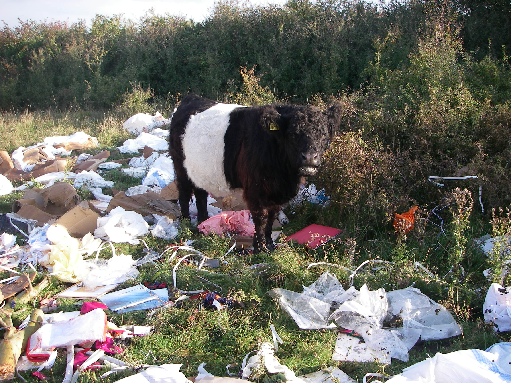
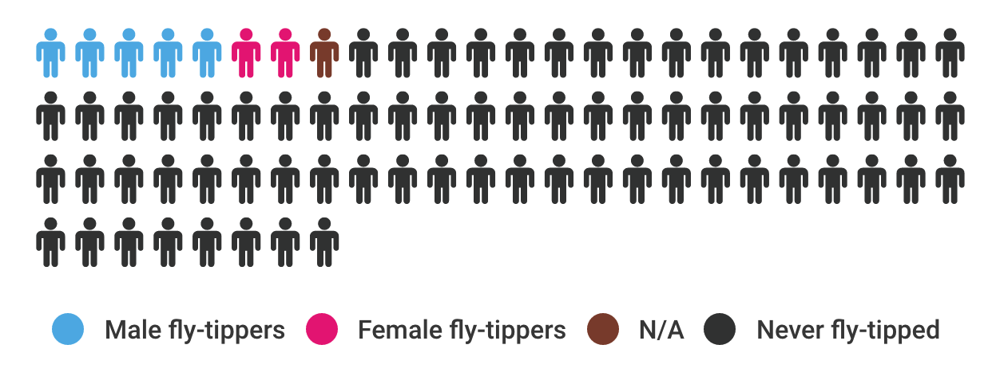
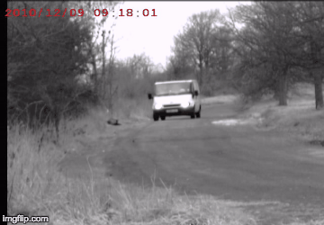

Do you know that fly-tipping is a widespread problem across Wales? It causes serious pollution and it is a threat to humans and wildlife.
Copiright @ Buckinghamshire Enforcement Team
Copiright @ Buckinghamshire Enforcement Team
Despite the good progress made by local authorities, 32,000 were the incidents recorded in Wales between 2014 and 2015 on public land. Fly-tipping affects our economy, damaging tourism and inward investment potential of an area, as well as the value of its homes.
Fly-tipping is not only an anti-social behaviour, but it is a serious offence set out in the Environmental Protection Act in 1990. New sentencing guidelines for environmental offences were issued in 2014, with the intent of making the punishment of offenders a deterrent to commit the crime.
Since then, fines have reflected the true cost of fly-tipping on society. In April, a skip hire firm in South Wales was fined £180,000 for dumping thousands of tonnes of waste illegally.
Fly-tipping is more than a national problem, it is not an issue confined to geographical boundaries, and that’s why Wales, Scotland and England are working together to tackle it.
Rhondda Cynon Taff is at the top, followed respectively by Swansea, Cardiff and Caerphilly. This is not surprising if we consider that they contain high populated towns.
A hypothetical formula, "more waste, less distance", is put forward to locate the incidents. This comes from an interview with the Buckinghamshire Enforcement Waste Officer, David Rounding: «We get most fly-tipping within a relatively short distance of large population centres, where most waste is generated».
However, it is not just a matter of population density, as proved by the fact there are high figures for Northern local authorities (such as Isle of Anglesey and Denbighsire) that rank low on the density table.
Furthermore, the difference in figures across Wales is abnormal: summing together the values of Wrexham, Monmouthshire and Ceredigion, they do not even account for 0,1% of the incidents rates.
This huge variation in numbers could either be explained by resources invested by local authorities or by poverty. Deprived communities, in fact, are often affected by fly-tipping and a poor local environment could not only be a symptom of poverty, but also be a cause.
As shown in the graph, the trend for Cardiff is very similar to the total one. In fact, also if Wales' capital comes "only" in third place, it halved its figuers in the last year and markedly fell by 82% over an eight-year period. Same trend applies for Vale of Glamorgan, whose incidents amounted to over 26,000 in 2006, but data dipped by a factor of three.
However, out of all 22 local authorities, only a dozen decreased over time. At the top, we find Swansea and Rhondda Cynon Taff, whose numbers gradually rose over the last four years. Other local authorities with an upward trend are Isle of Anglesey and Denbighshire in the North, and Blaenau Gwent in the South.
An interesting case is the one of Newport, whose figures have significantly grown and are currently 14 times bigger than in 2006. This seems due to the fact that people dump rubbish in the streets without fear of prosecution.
Finally, authorities like Flintshire, Powis and Bridgend saw a strong fluctuation to later come back to approximately the same figures in 2006. Explanations could not be found.
Four types of fly-typpers were identified in a report by the London-wide Initiative on Fly-tipping. These are:
Nevertheless, according to the graph, the main perpetrators of this environmental crime remain irresponsible residents (household) and commercial fly-tippers.
While the number of black bags has halved since 2009, the same cannot be said for "other household". However, this should not surprise if we think of the rise in the incidents recorded over last Christmas. People replace furniture, toys and clothes with new gifts and tend to carelessly throw old stuff in the streets.
Lastly, other commonly tipped types of waste are: Construction and Demolition Waste, White Goods (like fridges and other kitchen appliances) and Green Waste (biodegradable waste composed of garden or park waste).
Even though, fly-tipping figures have dropped since 2006, it is still a serious problem that influences council tax budget. However, the number looks smaller when compared to the size of the problem in Britain: fly-tipping costs England £50 million.
The scatterplot reveals a markedly decrease in Cardiff's costs, which have fallen by 77%, while Swansea has "only" halved its figures. An upward trend can also be observed for Flintshire, Carmarthenshire and in particular Newport, which saw an upsurge in its costs, going from almost £5,000 to over £120,000.
Two additional economical impacts there are often overlooked are the landfill tax and gate fees (£105) and the Fire and Rescue Services' price per call out (£1,970 on average). Fly-tipping hotspots, in fact, are often subjected to arson attacks because of the big amount of tyres and gas bottles.
CURIOSITY
£632,000 of funding were secured for The Valleys Regional Park with the aim of reducing fly-tipping incidents and raising the profile of South Wales as a visitor destination.
Data source: StatsWales
We conducted an anonymous survey between the 5th and the 9th of April, to find fly-tippers and to understand other people's attitudes towards the issue. A total of 70 people (35 males and 35 females) with different age ranges, social backgrounds and education levels participated.
As stated in the replies, the main reasons for fly-tipping seem to be (in order of size) laziness and money. According to Rounding, also if there are many ways to dispose waste and “excellent facilities that could be used, the problem is that people are reluctant to pay”.
"It's a selfish thing to do because everyone else ends up paying for the clean up through taxes."
"Appalling, illegal and very bad for the environment."
"It should carry custodial sentence."
"It's incredibly antisocial and disrespectful."

In their defence, fly-tippers justified their actions blaming a lack in the rubbish collection service and the council ineffective waste policies. Moreover, some of them believed that it is useful when objects can be re-used, since you can take and get rid of stuff that way. "I once found a working telly in my home street", confessed an anonymous fly-tipper.
Though when talking of fly-tipping it is often assumed we all know what we are referring to, in reality, fly tipping means different things to different people. Therefore, figures need be handled with care before being used, keeping in mind that many councils reach high numbers only because they score as fly-tipping things that are not:
«Some councils argue that even the placement of one additional sack of refuse beside a bin on ‘bin day’ is fly-tipping, when it is actually not» (Rounding, D., 2016)
Moreover, many people leave reusable stuff outside their property with the hope that someone will take them. According to Rounding, that is not fly-tipping yet:
«I wouldn't call that action fly-tipping, I've never prosecuted it. But if they drive down the road and chuck it on the verge of somebody else property, then it becomes a sanction 33 and that's considered fly-tipping.» (Rounding, D., 2016)
The same reasoning, about being sceptical about data, can be applied on prosecution numbers. Again, many local authorities include in their figures things there are not fly-tipping prosecutions.
In Wales only 105 prosecutions were recorder last year. This number was vastly outnumbered by the English one, which was 94% higher.
Fines remain the most popular outcome and, even though fly-tipping is a criminal offence punishable up to £50,000, it is mostly little fines we are talking about.
«We are a very robust prosecutive authority and we convict in average of one a week. Every local authority that says that it convicts more than 60 prosecutions per year is lying.» (Rounding, D., 2016)
After the examination conducted, we can propose the best ways to, if not resolve, at least minimize the problem.
All the fly-tippers do litter. A potential solution could be then starting "from the bottom", simply fighting littering.
Changes in Local Authorities’ approach could also help. At the moment, tackling fly-tipping incidents is not a statutory duty in Wales and resources invested differ among councils.
Reducing the amount of waste can prevent fly-tipping. We can get rid of unwanted stuff through sales platforms (like Ebay) or using charities and online spaces (like Freebies).
Recording incidents locations and seeing where they come from is another option. Scotland and Wales are currently jointly working on a Fly-Mapper, an app for reporting incidents spots.
Lastly, Enforcement Teams could be improved. Their duties consist of analysing data, examining waste, speaking with witnesses and hiding CCTV cameras.
In Wales, the current number of prosecutions is very low, representing only 0.3% of all the incidents reported. However, as proved by the Buckinghamshire Council’ strategy, the best output seems to derive from investing into Enforcement:
«We have shown that Enforcement can work, we have less dumping than we did and we have saved lots of money because of that». (Rounding, D., 2016)
In conclusion, Wales could focus on a range of innovative surveillance techniques to catch fly-tippers. At present, most of the hidden cameras are not set to record videos, because a better resolution can be obtained taking photos.
Copiright @ Buckinghamshire Enforcement Team